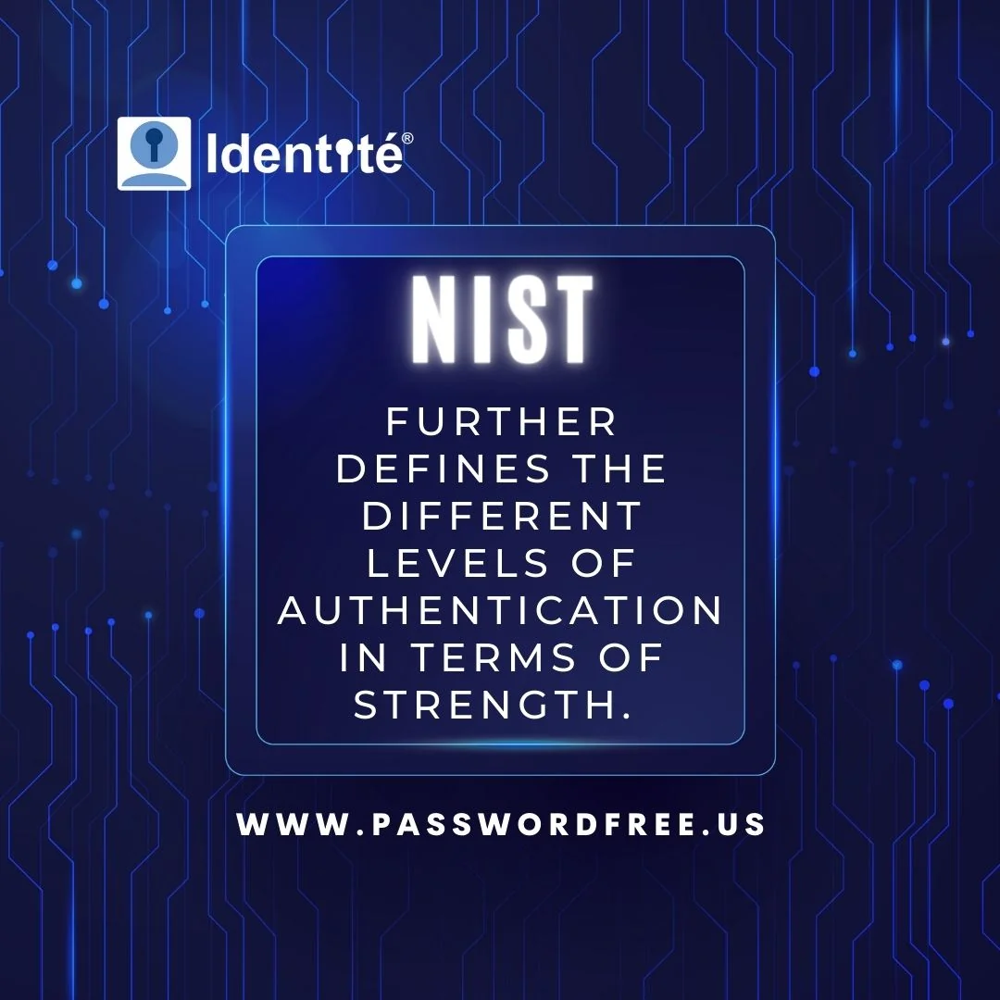
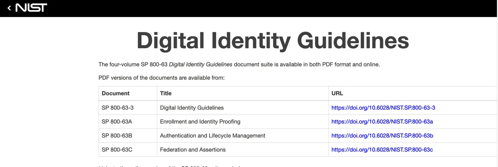
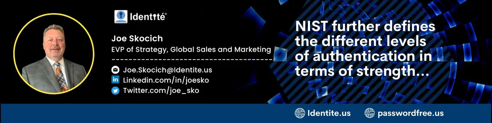

Updated NIST Guidelines for Authentication
NIST released a fully updated version of the publication 800-63-B in June 2017. This further defined the different levels of authentication in terms of strength. A revision in March 2020 added a better explanation for “verifier impersonation resistance”. This is a key defense against all forms of social engineering, MitM, Browser-n-Browser, website impersonation, and Phishing attacks.
How strong is your authentication?
In NIST 800-63-B publication, there are 3 levels of authentication. AAL1 is the lowest rating in terms of strength and compliance for this level applies to most websites, healthcare portals, financial portals and applications, and government portals for citizens. AAL1 can be multi-factor authentication. This is surprising to a lot of folks because when you hear the term multi-factor authentication, the assumption is that this is more secure than using a single factor such as username and password. However, when username and password are combined with another factor such as an OTP that is sent via SMS or email, then technically speaking this is using more than one factor and is considered “multi-factor”. The reality is these two factors are two of the same type –“something a user knows”. This can easily be obtained from a bad actor by impersonating the dialogue and asking a user to input them.
AAL2 is the next level of strength defined in NIST 800-63-B. This level adds that the authenticating user must be in possession of “two different” authentication factors. The use of OTP via email or SMS along with a password will not comply with this level. Also, at least one of the factors must be “replay-resistant”.
AAL3 is the highest level of strength defined in NIST 800-63-B. Like AAL2, the user authenticating must be in control of two distinct authentication factors. However, a key requirement to comply with this level is that the “authenticator provides verifier impersonation resistance”.This is a key defense against impersonation and phishing. Educating users on how to recognize fake websites and impersonation techniques is important but even the savviest cyber-security experts can be tricked into giving up their credentials.
Authentication should be simple and secure
There is no debate on why authentication needs to be simple. Authentication is the number one source of friction for new and returning users to a website application. We are now seeing website and application registration techniques that eliminate passwords by simply clicking on a social icon. Returning users are not prompted for a login, which makes it very convenient for the authenticating user.

This is usually done via a common protocol called OAuth, which dispenses a digital token that essentially allows for the authorization of certain actions without requiring full authentication. Unfortunately, users are still authenticated with at least a traditional username and password before the token can be granted. These social service login dialogues are easily impersonated. Thus, users can still be easily tricked into authorizing a token for the bad actor as well.
Even as major tech firms and social services like Apple roll out “PassKey” and other passwordless tokens, users can be tricked into authorizing and issuing these types of tokens to bad actors as well. For authentication to be as secure as it can be, NIST 800-63-B AAL3 should be the bar for every website and application that registers and authenticates users.
This does not mean that a user needs to perform additional steps to ensure higher levels of security. In fact, the more actions made by a human that we can replace with technology during the authentication process, the more secure authentication becomes. This is because, as the saying goes, “we are only human”.
Full Duplex Authentication®
Identité® developed and patented Full Duplex Authentication® to comply with NIST 800-63-B AAL3. As the name implies, “verifier impersonation resistance” is achieved by making the “verifier” authenticates to the user before the user allows the credentials for authentication to be verified. Full Duplex Authentication® is added to the factor of “something a user has” to protect users against phishing and impersonation attacks. Full Duplex Authentication® is executed without any additional action by a user. The result is more secure authentication with less friction because the verifier impersonation check is done by technology at light speed.

Summary
At Identite®, we have integrated Full Duplex Authentication® and other factors such as biometrics and hardware tokens into our solutions for both the workforce and online customers. We offer both of our PasswordFree Authentication® solutions via a Platform as a Service (on-premise) as well as via Software as a Service for online customers.
To learn more about how Full Duplex Authentication® can greatly improve the user experience for online customers during authentication and offer the highest level of protection for users against phishing, please visit us at www.passwordfree.us. More information about our PaaS offerings can be found at www.identite.us. For more details about the NIST update https://pages.nist.gov/800-63-3/
Blog Post by Joe Skocich @Identite.us
